14. Recorrer laberintos¶
En esta práctica vamos a programar un juego que consiste en recorrer varios laberintos desde su comienzo hasta el punto final antes de que a nuestro personaje se le termine su energía.
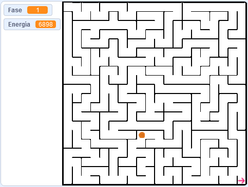{kind=link}
Iniciamos el editor de Scratch.
Pulsamos el botón idioma
 en la barra
superior y elegimos Español.
en la barra
superior y elegimos Español.Borramos el objeto gato presionando sobre el icono del cubo de basura.

A continuación añadimos un nuevo personaje, una pelota de basketball.
Pulsamos el botón elige un objeto
 .
.Buscamos en la sección Deportes.
y seleccionamos el objeto Basketball.
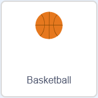Ahora crearemos la variable Fase que va a contar el número de laberintos que vamos recorriendo. Cuando esta variable supere los cinco laberintos, el programa terminará.
Pulsamos el botón de variables
 ,
,pulsamos en crear una variable
 .
.Cambiamos el nombre de la variable a Fase
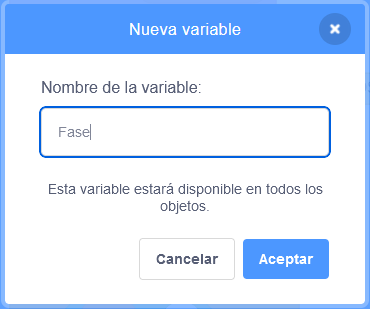Por último pulsamos el botón Aceptar
Crearemos también la variable Energía que va a contar la energía de que disponemos para recorrer todos los laberintos. Si la variable energía se vacía, perderemos el juego y el programa terminará.
Pulsamos el botón de variables
,pulsamos en crear una variable
.Cambiamos el nombre de la variable a Energía

Por último pulsamos el botón Aceptar
Creamos dos nuevos bloques llamados mueve_x y mueve_y que van a mover la pelota por la pantalla.
Primero pulsamos en el botón mis bloques 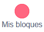
A continuación pulsamos en crear un bloque
Luego cambiamos el nombre del nuevo bloque a mueve_x
Primero pulsamos en el botón mis bloques
A continuación pulsamos en crear un bloque
Luego cambiamos el nombre del nuevo bloque a mueve_y
Realizamos un programa que mueve la pelota en las cuatro direcciones, consumiendo energía y rebotando en las paredes del laberinto para que no las pueda atravesar.


La pelota aún no se moverá porque necesitamos que otra rutina llame a las funciones que hemos creado.
Ahora creamos un nuevo bloque, Inicia, que mostrará la pelota con tamaño pequeño al comienzo del laberinto.
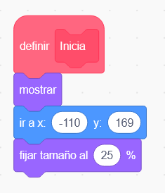Para continuar programaremos la rutina principal que llama a todos los bloques que hemos creado anteriormente.
Todavía no podremos cambiar el fondo a "Sin_energía" porque este fondo no ha sido creado aún. Recuerda cambiarlo después de crear el fondo.
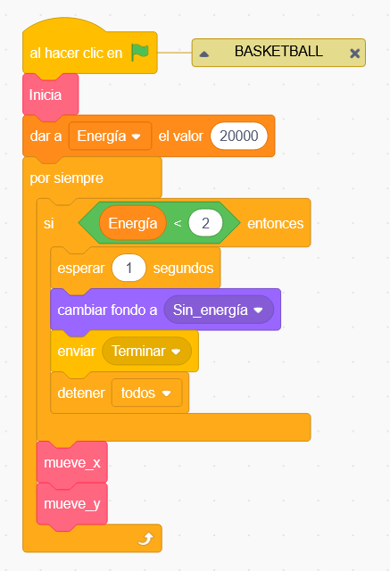Para terminar el programa de la pelota, programaremos el comportamiento cuando recibe los mensajes de Comenzar y de Terminar.

Ahora cambiaremos al Escenario y dentro de la pestaña de fondos vamos a crear los mensajes del juego.
Primero seleccionamos en fondos, pintar un fondo.
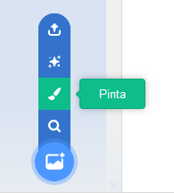A continuación, con la herramienta Texto escribimos en la pantalla el siguiente mensaje.
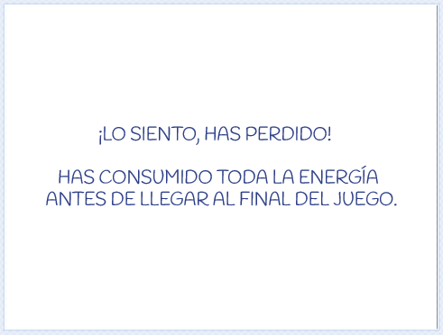Cambia el nombre del disfraz a "Sin_energía".
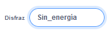Recuerda modificar el programa de la pelota de basketball ahora que este fondo ya está creado.
Ahora cambiaremos de nuevo al Escenario y dentro de la pestaña de fondos vamos a crear más mensajes del juego.
Seleccionamos en fondos, pintar un fondo.
A continuación, con la herramienta Texto escribimos en la pantalla el siguiente mensaje.
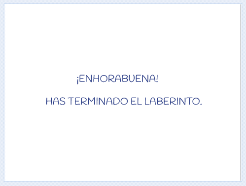Cambiamos el nombre del disfraz a "Terminado".
Seleccionamos de nuevo pintar un fondo.
A continuación, con la herramienta Texto escribimos en la pantalla el siguiente mensaje.

Cambiamos el nombre del disfraz a "Finalizado".
Para completar los fondos, vamos a descargar el siguiente archivo comprimido que contiene varios laberintos en su interior.
Laberintos para recorrer. Formato ZIP.Una vez descargado, abrimos el archivo Zip y extraemos todos los archivos de laberinto que tiene en su interior en una carpeta conocida.
Se pueden extraer todos los archivos pinchando con el botón derecho del ratón en el archivo Zip y seleccionando la opción
Extraer todo...y pulsando luego el botónExtraer.De nuevo en el Escenario, dentro de la pestaña de fondos, vamos a importar los distintos laberintos.
Primero seleccionamos en fondos, carga un fondo.

Elegimos la carpeta donde se ha descargado el archivo Zip anterior y la carpeta donde se han extraído los laberintos. Pregunta a tu profesor si no sabes cómo seguir en este paso.
Una vez en la carpeta de los laberintos, pincha en el primer laberinto y pulsa el botón
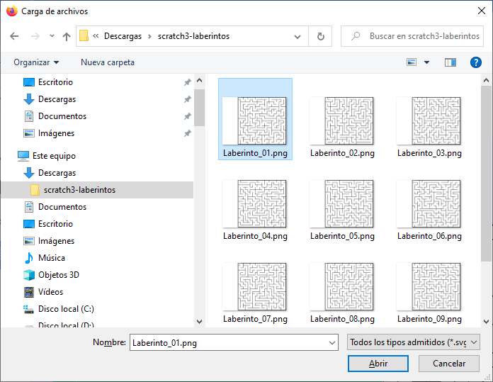Abrir.Repetimos el paso anterior con los cinco primeros laberintos.
Para continuar, vamos a programar el comportamiento del Escenario en la pestaña de Código.
Al comenzar el programa establecemos el valor de la variable Fase en 1 (el número del laberinto) y mostramos el primer laberinto.
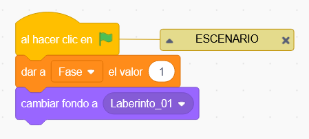Cada vez que reciba el mensaje de Comenzar un nuevo laberinto, sumamos uno a la variable Fase y mostramos el laberinto que corresponda. Una vez llegado al valor 6 los laberintos se habrán acabado y podemos finalizar el programa con un mensaje ganador.

Llegado este punto, solo hace falta definir cuándo se termina cada laberinto. Para conseguirlo vamos a añadir un nuevo objeto, una flecha, que va a enviar el mensaje de laberinto terminado cuando toque la pelota de basketball.
Añadimos un nuevo personaje, una flecha.
Pulsamos el botón elige un objeto
.Buscamos en la sección Todos.
y seleccionamos el objeto Arrow1.
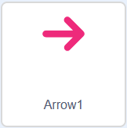Realizamos un programa que muestre la flecha en la esquina inferior derecha al comenzar el programa. También debe estar siempre detectando si toca a la pelota de basketball, para terminar el laberinto y comenzar uno nuevo.
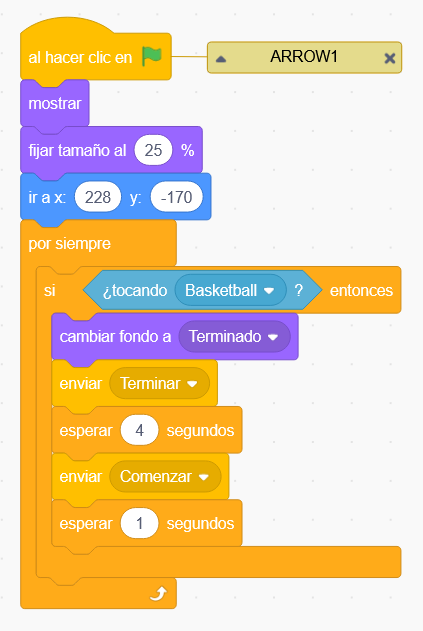Además programaremos que la flecha se esconda desde que se termine un laberinto hasta que comience el siguiente laberinto.
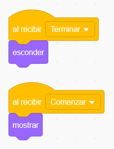Pulsamos la bandera verde
 para probar el funcionamiento del programa.
para probar el funcionamiento del programa.
{kind=link}
{kind=link}
{kind=link}
{kind=link}
{kind=link}
{kind=link}
{kind=link}
{kind=link}
{kind=link}
Retos¶
Añade un rastro de color azul claro al movimiento de la pelota para que sepamos en todo momento qué recorrido ha realizado la pelota.
Mide cuánta energía consume la pelota para recorrer cada laberinto y establece al comienzo un valor de energía que sea justo el necesario para pasar el juego.
Al comenzar cada laberinto, añade pequeñas frutas esparcidas de manera aleatoria. Cuando la pelota toque una de estas frutas, la fruta debe desaparecer y añadir energía a la pelota.
Las frutas se añadirán como clones de una fruta que debe permanecer escondida.
Establece para la pelota un valor de energía inicial menor, de manera que sea necesario recoger varias frutas para poder terminar todos los laberintos con suficiente energía.
Ajusta el número de frutas y la energía que añade cada fruta para que el juego sea difícil, pero que se pueda terminar.